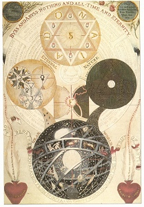

Sacred Texts Esoteric
Buy Kindle Download of this Book
Buy Printed Copy of this Book at lulu.com
|

D.A. Freher, in Works of J. Behmen, Law Edition [1764] (Public Domain Image) |
The Signature of All Thingsby Jacob Boehme[1912] |
In an herb, if the blossom be somewhat reddish, and wreathed, or streaked, and inclined to white by the red, then is the power of Venus there, which makes resistance therein; but if it be only reddish, and of dark wriths or streaks, with a rough peel or skin on the stalk, branch, and leaf, then does the basilisk lodge there.--p. 99, no. 39.
If Signatura Rerum by the German mystic Jacob Boehme looks like a book you'd find in the library at a certain school of wizardry, you're not too far off. Boehme discourses at length here on one of the fundamental laws of Magic: the law of signatures, the concept that every object in the real world has some hidden meaning, and particularly how these signatures interact.
At the core of Boehme's philosophy is a mystical Christianity. However, his beliefs were far from that of the Lutheran establishment, and he was persecuted his entire life. Boehme's view of a universe where a creative and destructive principle are in conflict was later repurposed by Hegel as the dialectic. Newton, Nietzsche, the Quaker George Fox, and even Phillip K. Dick have all been cited as being influenced by Boehme.
NOTE: The English translation from the Latin appears to be from a much older book, but the translator is uncredited. The introduction is signed by one Clifford Bax, but he does not appear to have produced the translation. Any help as to the identity of the translator would be appreciated.--JBH.
Of Heaven and Hell